Wifi-robin
Presentación:
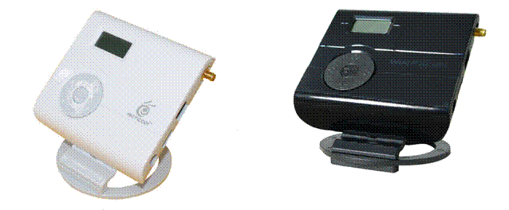
El ANTCOR AW54-SC, producto que se vende en el mercado con otros nombres comerciales tales como el "Wifi Robin".
Ambos productos están fabricados por la empresa ANTCOR (desarmando un Wifi
Robin verás en su interior la inscripción ANTCOR).
La característica que más furor (y dudas) está causando es la de acceder a redes inalámbricas con solo seleccionarlas en su LCD (cifrado wep).
Durante las pruebas, mientras el wifirobin actúa no permite prácticamente la navegación de los equipos conectados a la red, por lo que no toquéis las redes de vuestros vecinos con el aparato.
Usadlo bajo vuestra responsabilidad, y con sentido.
No hagáis uso del dispositivo en redes que no sean de tu propiedad.
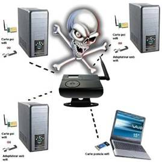
Al ser un artículo que merece un detallado análisis, lo dividiremos en varias partes para poder adentrarnos en todas sus funciones. Mostraremos las funciones del mismo y unas pruebas de laboratorio.Wifi robin es un punto de acceso muy "especial".
Empezaremos comentando sus principales características:
* Bridge Wi-Fi
* Punto de acceso
* Repetidor universal
* Router (Firewall, uPNP, DDNS, DMZ etc...)
* Router 3G (Necesita modem usb)
* Descifra claves WEP
* Guía para alinear la antena
* Buena interface de gestión (AirOs de ubiquiti)
* Salida de antena RP-SMA, la cual nos permite poder cambiar la antena por una
mas potente fácilmente.
* No lleva fuente de alimentacion y consume mucha corriente
El dispositivo:
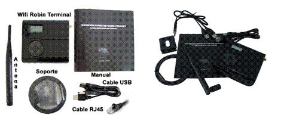
Lo primero que nos encontramos al abrir la caja es con el wifirobin, más pequeño de lo que nos esperábamos.
Al sacar el WifiRobin y su
soporte encontraremos el cable usb (cuidado con perderlo ya que es bastante
especialillo, mirad las fotos), un cable de red RJ45, el soporte del wifi
robin, la antena de 5Db y un escueto manual de instrucciones. El dispositivo ya
viene actualizado a
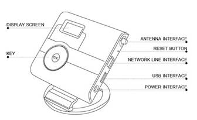
En caso de tener otra versión, puedes descargarte la última versión del
firmware de wifirobin
Cuenta con un display LCD, retroiluminado en verde, un poco justo de calidad
(se ven algunas líneas decoloradas). Es un display de 4x16 líneas/caracteres,
que de todas formas cumple sobradamente su función, ya que solo lo
Aunque nos lo anuncien como un dispositivo autónomo que no
necesita PC para operar, la alimentación la toma de un usb (en algún portátil,
sobre todo centrinos antiguos, puede ser necesario usar el doble usb que trae),
por lo que necesitaremos un PC para alimentarlo, un adaptador de 220v a usb o
una fuente de alimentación de 5V 2Amp. De todas estas opciones solo viene el
cable usb en el pack, por lo que sin PC no funciona.
Confirmaros que en la caja no se hace ninguna alusión a las funciones
“especiales” del wifi robin, suponemos que para no tener problemas con las
autoridades competentes.
Funciones Standard:
Es complicado distinguir donde acaban las funciones Standard y empiezan las
avanzadas, ya que depende mucho del usuario final.
Vamos a definir como Standard la función punto de acceso, bridge y router:
Punto de acceso:
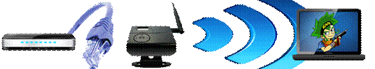
Podemos conectar el dispositivo a nuestro router o modem para dotarlo de
funciones inalámbricas. Es tan sencillo como configurarlo en modo AP,
ponerle un nombre a la red y configurar el tipo de encriptación a utilizar. En
esta función no habilita el servidor de dhcp, por lo que el encargado de
asignarnos ip sería nuestro equipo de Internet. PRECAUCION: si tienes un
cablemodem, solo le asignara una ip (la ip pública) al primer equipo que se
conecte. En caso de que este sea tu equipamiento tienes que optar por la opción
Router.
Bridge:
En este modo, el wifirobin se conecta a una red a la cual le damos los datos
previamente (compatible con la función wifirobin) y nos da conectividad por la
salida de red Ethernet. Esto es válido para conectar dispositivos a los que no
se le pueda incorporar una tarjeta de red wireless, pero si tengan toma Ethernet
(xbox clásica, dvds compatibles, PC con tarjeta de red etc…).
En este modo, el dispositivo es transparente a la red. A todos los efectos es
como si el equipo que se conectara fuera el que esta por cable, y en el router
la del PC será la mac que aparezca reflejada.
Incluso puedes conectarlo a un router en su apartado wan, y conectar tus
equipos de cable sin tener que pasar cable en toda la casa, o incluso entre
casas contiguas y prolongar la lan. Esta parte se podría catalogar como
avanzada si se quiere usar la 2 opción propuesta. Para un solo dispositivo la
configuración es muy fácil. Yo uso un bridge en casa para conectar mi
recreativa a la red.
Router:
En este modo, el wifirobin adquiere la dirección ip, publica o privada, y
reparte direcciones por dhcp a los equipos que conectemos por wifi, pudiendo
realizar aperturas de puertos, activar uPnP para la red, realizar una apertura
DMZ (muy recomendada para las consolas y que no nos marque NAT restrictiva o
similar)
El dispositivo NO es transparente a la red. El wifi-robin es el equipo que se
conecta a la red, y es la mac que aparece en el router o cablemodem.
Podríamos conectar varios dispositivos aunque tengamos un modem o un equipo
monopuesto gracias a las funciones NAT del router.
Funciones especiales:
Dentro de las funciones especiales abarcaremos el uso como repetidor wifi, como
router 3g y la famosa opción “wifirobin” que tanto revuelo ha causado.
Repetidor:
En la opción repetidor, configuraríamos el dispositivo y lo colocaríamos en un
área próxima al fin de la cobertura wifi, pero sin aproximarnos demasiado al
final de la misma. Una referencia es colocarlo al 20% de la señal de emisión
original. Para esto, un portátil con network stumbler será tu mejor aliado.
Una vez conectado a tu red inalámbrica, el wifirobin emitirá una nueva señal,
con el mismo nombre (Modo repetidor) u otro distinto (Modo wifi robin) y desde
ese punto tendremos de nuevo la señal al 100%, como podéis observar en el
gráfico.
Router 3g:
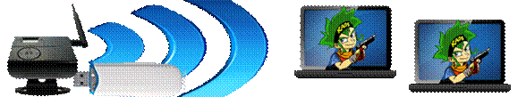
Por cierto, el Wifi Robin permite conectar un modem usb de huawei (parece que
no reconoce muchas mas marcas) y usarlo como router wifi.
Fabricante |
Modelo |
Network |
AW54-SC |
HUAWEI |
EC169 |
EVDO |
OK |
EC
|
EVDO |
OK |
|
EC1260 |
EVDO |
OK |
|
EC1261 |
EVDO |
OK |
|
ZTE |
AC2726 |
EVDO |
OK |
AC2736 |
EVDO |
OK |
|
AC2746 |
EVDO |
OK |
|
Tlaytech |
TUE800 |
EVDO |
OK |
Si se utiliza la función de 3G, se necesita usar el cargador
de pared para el suministro de energía. Tenga en cuenta que el cargador de pared
no está incluido en el paquete, por favor ponte en contacto con el sitio
oficial para comprar el cargador.
Ir a la ficha Red, seleccione el modo de puente, permitan 3G, permiten servidor
DHCP, aplicar el cambio, entonces usted puede navegar por Internet mediante el
uso de 3G.
Tenga en cuenta:
1), el apoyo Wifirobin 3G a tu tarjeta de red.
2), tarjeta de red 3G se ha conectado al dispositivo por USB
3), Wifirobin elegir
Wifi-robin:
Este modo que nos interesa para ver si es capaz de sacar nuestra clave de forma
automática y se gestiona desde el display LCD integrado. Simplemente tendremos
que escanear las redes disponibles (Wireless Scan) y escoger la red que
queramos auditar.
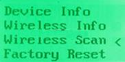
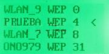
Al escogerla veremos que nos muestra los Ivs que va capturando.
Terminado este paso, nos mostrará de forma automática un sucessfull informando que estamos conectados de forma correcta, o en el peor de los casos un retry.
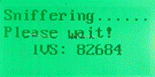
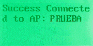
Cuando conecta con la red a auditar, automáticamente enciende nuestra red,
teniendo accesible la wifi con el nombre y clave que hayamos configurado, en el
siguiente ejemplo seria [el Repeater ESSID: ROBIN y WPA clave Pre-compartidas: 12345678. Solo
resta conectarnos a nuestra red que seria en este ejemplo PRUEBA cuya
clave seria 31323334353637383940414243 en
hexadecimal.
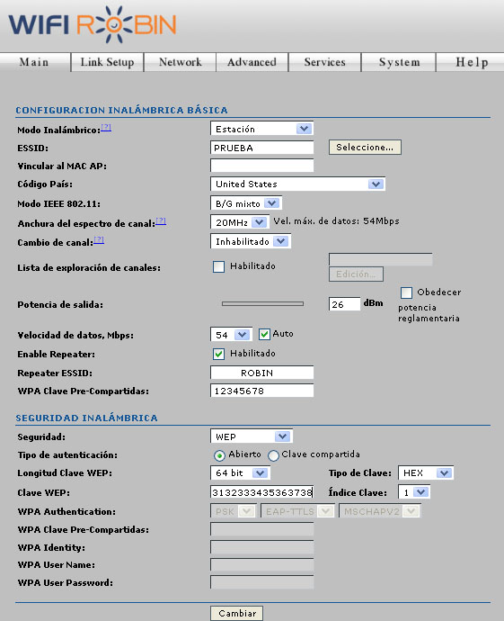
No muestra la clave en la pantalla. Un punto a mejorar en la próxima actualización del firmware.
Para verla hay que acceder a
La clave puede facilitárnosla
en hex o ASCII. Realmente son equivalentes pero algún driver o software puede
pediros que la especifiquéis en algún formato en concreto.
Un ejemplo. La clave que os muestra es en hex de 26 dígitos (cifrado 128) es:
31323334353637383940414243
Si escogemos la opción ASCII y os dará una clave de 13 dígitos:
12345657890ABC
Test:
He testeado el producto con varias redes, os dejo un recuadro con los resultados obtenidos:
Router:
Thomson Tcw710 |
Router:
Thomson Tcw710 |
Router:
Thomson Tcw710 |
Router:
Thomson Tcw710 |
Router:
Motorola Sbg900 |
Router:
Motorola Sbg900 |
Router:
Motorola Sbg900 |
Router:
Motorola Sbg900 RESTRICCION MAC |
Router:
Xavi 7868r |
Router:
Xavi 7868r |
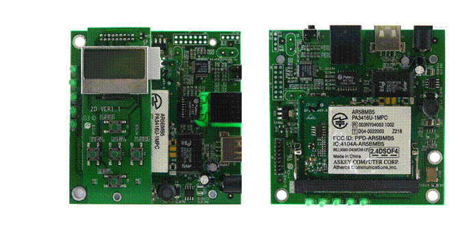
Técnicamente hablando:El esquema de funcionamiento es de 2 dispositivos separados,
pero integrados.
Por un lado tenemos el router/ap y por el otro un circuito encargado de
desencriptar las redes. Ambos dispositivos comparten una dirección de memoria,
en la cual intercambian los dígitos de la clave y los parámetros de la red, por
lo que pueden comunicarse y transferirse datos.
En las pruebas de laboratorio he comprobado que el wifi robin no inyecta
tráfico en la red, aunque si que logra hacer una falsa asociación. Seria bueno
que lo modificasen en alguna revisión de firmware, sería ya perfecto (también
el que muestre la clave en la pantalla). Al no inyectar tráfico, influye en el
tiempo de auditoría. Si hay tráfico en la misma será rápido, y puede demorarse
si estáis solos en la red.
No he conseguido resultados en redes wpa. La única posibilidad sería con claves
por defecto genéricas, pero veo difícil que salga una revisión que incluya esta
posibilidad.
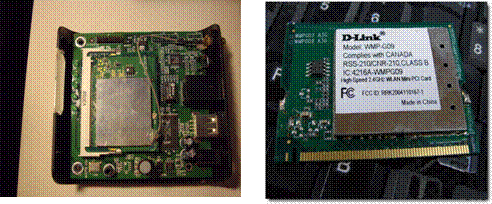
Otra cosa habitual en estos productos chinos es el engordar
las características técnicas. He leído que era de 2W, de 1W etc... en varias
paginas. La realidad es que monta una tarjeta wireless mini-pci Dlink WMP-G09,
la cual ofrece una salida de 100mW. La potencia standard de un portátil es de
unos 32 mW por lo que la diferencia es notable, pero solo llegaremos a
aproximarnos a la distancia indicada en la publicidad con antenas muy
direccionales.
PROS:
* Pequeño y ligero.
* Múltiples opciones de funcionamiento.
* Útil para iniciarse en auditorias wifi.
* Fácil aumento de la cobertura wifi en tu casa o
conectar dispositivos sin características wireless.
CONTRAS:
* Manual muy escueto y traducción automática.
* No inyecta tráfico en las auditorías.
* Que no muestre la clave en la pantalla del wifi-robin.
* Un solo conector usb, por lo que para 3G tienes que usarlo con un adaptador
de corriente externo.
* No trae un adaptador de corriente, si se conecta al puerto USB corremos el peligro de quemar el puerto, conviene conectarlo a 2 puertos ya que consume solo en reposo 450 mw y cada puerto USB aguanta unos 500 mw, en los portatiles agota rapidamente la bateria por su elevado consumo.
Conclusiones:
Las pruebas realizadas han sido satisfactorias. Es un buen producto, el
cual aun sin la opción “wifirobin” vale bien el precio marcado. Solo tenemos
que consultar el precio de cualquier repetidor wifi, y solo hace esa función.
Wifi-robin nos ofrece mucho más.
Para proseguir, si buscáis routers con soporte 3g veréis que no son baratos
precisamente, ni abundan en el mercado… por lo que hace que el precio del
producto sea ajustado a nuestro punto de vista.
Recomendado para aquellos que quieran ampliar o mejorar la conectividad wifi de
sus consolas o su lan en general (casas grandes, duplex, muros muy anchos o con
muchas canalizaciones etc…), para los que quieran tener un punto de acceso con
funciones avanzadas o iniciarse en la auditoría wireless. Puede que haya
soluciones más baratas para auditoría (Alfa usb y distros varias), pero ninguna
nos ofrece la versatilidad de wifirobin ni la facilidad de uso (sin contar compatibilidad
de tarjetas, pc para la live, saber un mínimo de manejo de shells unix etc...).
Las posibilidades de que funcione la opción wifirobin en una red wep son muy
altas, pero el tiempo varía considerablemente si hay un cliente conectado o
está vacía la red.